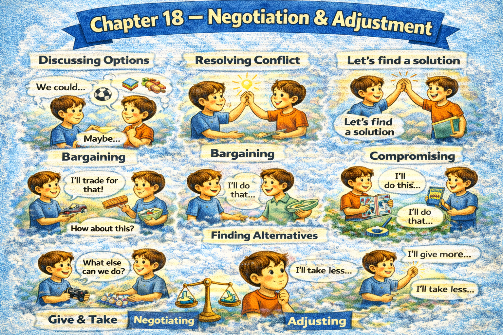

Chapter 18 — Negotiation & Adjustment

Micro Scene 1 — Stating a Position Clearly
1️⃣ Scene Text
Before negotiation begins, I clarify my position explicitly.
I define what I am willing to accept and what I am not.
If expectations remain vague, misunderstanding increases.
A clear starting point prevents unnecessary tension.
I distinguish between preferences and non-negotiable requirements.
Transparency strengthens credibility.
When boundaries are articulated early, adjustment becomes smoother.
If my constraints are understood, compromise becomes realistic.
Positioning does not imply rigidity.
It establishes structure for dialogue.
Clarity reduces defensive reaction.
2️⃣ Core Verb Pool
clarify
define
accept
remain
increase
prevent
distinguish
strengthen
articulate
become
establish
reduce
3️⃣ Structure Patterns
Before X + verb, Y + verb
I define what + clause
If X + verb, Y + verb
X does not imply A; it implies B
When X + verb, Y + verb
4️⃣ Replace & Extend
Replace boundary:
I define what I can accept.
→ I clarify my limits.
→ I specify my conditions.
Replace misunderstanding:
If expectations are unclear…
→ If assumptions are unstated…
→ If constraints are hidden…
Replace structure:
Clarity establishes structure.
→ Transparency builds trust.
→ Defined limits stabilize discussion.
5️⃣ Spoken Mode
Let me clarify my position first.
Here’s what I can accept — and what I can’t.
If we’re not clear from the start, confusion happens.
Setting boundaries early makes things easier.
🔎 Structural Notes
• “non-negotiable” signals firm boundary.
• Positioning ≠ hostility.
• Structure precedes flexibility.
Micro Scene 2 — Proposing a Compromise
1️⃣ Scene Text
When interests diverge, compromise becomes necessary.
I look for areas where flexibility is possible.
If both sides adjust proportionally, balance can be achieved.
I propose an alternative that preserves core priorities while modifying secondary terms.
Compromise does not mean surrender; it means recalibration.
If we focus only on winning, collaboration weakens.
Mutual concession strengthens long-term stability.
I evaluate which variables are negotiable and which are fixed.
When trade-offs are explicit, agreement becomes attainable.
Compromise requires clarity about value hierarchy.
Balanced adjustment sustains cooperation.
2️⃣ Core Verb Pool
diverge
look
adjust
achieve
propose
preserve
modify
mean
focus
weaken
strengthen
evaluate
become
require
sustain
3️⃣ Structure Patterns
When X + verb, Y + verb
If X + verb, Y + verb
X does not mean A; it means B
I propose + noun
When X + verb, Y + verb
X requires + noun
4️⃣ Replace & Extend
Replace recalibration:
Compromise means recalibration.
→ Adjustment means realignment.
→ Concession means balance.
Replace mutuality:
If both sides adjust…
→ If we both give something…
→ If each party shifts slightly…
Replace value:
Clarity about value hierarchy is necessary.
→ Understanding priorities guides compromise.
→ Knowing what matters most directs negotiation.
5️⃣ Spoken Mode
We might both need to adjust a little.
I’m not giving up — I’m recalibrating.
If we both move slightly, we can meet in the middle.
Let’s focus on what matters most.
🔎 Structural Notes
• “recalibration” reframes concession as strategic.
• “value hierarchy” implies ranked priorities.
• Mutual adjustment preserves dignity.
Micro Scene 3 — Conditional Concession
1️⃣ Scene Text
A concession becomes strategic when it is conditional.
I am willing to adjust the timeline if the scope is reduced.
If you can guarantee delivery quality, I can reconsider the deadline.
Conditional flexibility preserves balance.
Concession without reciprocity creates imbalance.
I clarify what I require in return for adjustment.
When exchange is proportional, agreement feels fair.
If one side concedes repeatedly, leverage weakens.
Structured concession strengthens credibility.
Adjustment tied to condition prevents exploitation.
Negotiation progresses through reciprocal movement.
2️⃣ Core Verb Pool
become
adjust
reduce
guarantee
reconsider
preserve
create
clarify
require
feel
concede
weaken
strengthen
prevent
progress
3️⃣ Structure Patterns
I am willing to + verb if + clause
If you + verb, I can + verb
X without Y creates Z
When X + verb, Y + verb
If X + verb, Y + verb
X progresses through + noun
4️⃣ Replace & Extend
Replace exchange:
I can extend the deadline if resources increase.
→ I can adjust pricing if volume increases.
→ I can reconsider terms if risk decreases.
Replace imbalance:
Concession without reciprocity creates imbalance.
→ Flexibility without structure weakens position.
→ Adjustment without condition reduces leverage.
Replace fairness:
Agreement feels fair when exchange is balanced.
→ Cooperation strengthens when both sides benefit.
→ Trust grows when adjustments are mutual.
5️⃣ Spoken Mode
I’m open to adjusting — if we also reduce the scope.
If you can guarantee quality, I can be flexible on timing.
I’m willing to move, but it has to be balanced.
We both need to give something.
🔎 Structural Notes
• “I am willing to…” signals openness without surrender.
• Conditional phrasing protects leverage.
• Reciprocity stabilizes negotiation.
Micro Scene 4 — Reframing the Issue
1️⃣ Scene Text
When negotiation stalls, reframing the issue can unlock progress.
Instead of debating positions, I shift attention to underlying interests.
If both sides focus on surface demands, tension increases.
Reframing changes the angle without dismissing concerns.
I ask what outcome each party is truly seeking.
Sometimes disagreement arises from misaligned framing rather than conflicting goals.
If we redefine the problem, new options emerge.
Reframing transforms opposition into exploration.
The language used shapes perceived constraints.
When assumptions are adjusted, flexibility increases.
Progress often begins with a new perspective.
2️⃣ Core Verb Pool
stall
reframe
shift
increase
change
dismiss
seek
arise
redefine
emerge
transform
shape
adjust
begin
3️⃣ Structure Patterns
When X + verb, Y + verb
Instead of + verb-ing, X + verb
If X + verb, Y + verb
X transforms A into B
When X + verb, Y + verb
Progress begins with + noun
4️⃣ Replace & Extend
Replace position:
Instead of defending positions…
→ Instead of repeating demands…
→ Instead of arguing details…
Replace misalignment:
Disagreement arises from framing.
→ Conflict emerges from perspective.
→ Tension results from interpretation.
Replace flexibility:
Reframing increases flexibility.
→ Redefinition creates options.
→ Perspective shift expands possibility.
5️⃣ Spoken Mode
Maybe we’re framing this the wrong way.
Instead of arguing positions, let’s talk about goals.
If we redefine the problem, we might find new options.
Sometimes the issue isn’t the goal — it’s how we’re looking at it.
🔎 Structural Notes
• “Instead of…” shifts tactical focus.
• “underlying interests” vs “positions” is classic negotiation language.
• Reframing adjusts perception, not fact.
Micro Scene 5 — Gradual Adjustment
1️⃣ Scene Text
Not all agreements require immediate resolution.
Sometimes gradual adjustment produces more stable outcomes.
I prefer incremental shifts rather than abrupt concessions.
If we test small changes first, risk decreases.
Gradual modification allows feedback to inform further decisions.
Adjustment becomes sustainable when implemented step by step.
If uncertainty remains high, phased implementation is wiser.
Sudden shifts can destabilize trust.
Measured change preserves confidence.
When both sides observe progress, alignment strengthens.
Negotiation evolves through controlled movement.
2️⃣ Core Verb Pool
require
produce
prefer
test
decrease
allow
inform
remain
implement
destabilize
preserve
observe
strengthen
evolve
3️⃣ Structure Patterns
Not all X require + noun
Sometimes X + verb
If X + verb, Y + verb
X allows + noun
When X + verb, Y + verb
X evolves through + noun
4️⃣ Replace & Extend
Replace incremental:
I prefer incremental change.
→ I favor phased adjustment.
→ I suggest step-by-step implementation.
Replace destabilization:
Sudden change destabilizes trust.
→ Abrupt shifts create uncertainty.
→ Rapid movement increases risk.
Replace evolution:
Negotiation evolves gradually.
→ Alignment develops over time.
→ Cooperation strengthens through progress.
5️⃣ Spoken Mode
We don’t have to solve everything at once.
Let’s try small adjustments first.
If it works, we can expand it.
Slow changes are often more stable.
We can move step by step.
🔎 Structural Notes
• “phased implementation” signals structured rollout.
• Gradualism reduces perceived threat.
• Stability over speed.
Micro Scene 6 — Finalizing Agreement
1️⃣ Scene Text
An agreement becomes effective only when its terms are clearly defined.
Before finalizing, I restate the commitments on both sides.
If expectations remain implicit, future conflict becomes likely.
Clarity at closure prevents misunderstanding later.
I confirm timelines, responsibilities, and conditions explicitly.
Agreement requires shared interpretation of obligations.
When ambiguity is eliminated, trust increases.
If adjustments are anticipated, we document them in advance.
Closure signals mutual commitment.
Final alignment transforms negotiation into implementation.
A clear agreement stabilizes cooperation.
2️⃣ Core Verb Pool
become
define
restate
remain
prevent
confirm
require
eliminate
increase
anticipate
document
signal
transform
stabilize
3️⃣ Structure Patterns
X becomes + adjective when + clause
Before + verb-ing
If X + verb, Y + verb
When X + verb, Y + verb
X transforms A into B
X requires + noun
4️⃣ Replace & Extend
Replace closure:
Before we finalize…
→ Before we conclude…
→ Before we confirm…
Replace documentation:
We document the terms.
→ We record the commitments.
→ We clarify responsibilities in writing.
Replace stabilization:
Clear agreement stabilizes cooperation.
→ Defined roles strengthen execution.
→ Explicit terms reduce conflict.
5️⃣ Spoken Mode
Let’s make sure we’re clear on the terms.
Before we finalize, let’s restate what each of us will do.
If it’s not clear now, it’ll cause problems later.
Clear agreement helps everything run smoothly.
🔎 Structural Notes
• “explicitly” prevents future ambiguity.
• “transform negotiation into implementation” marks phase shift.
• Closure is structural, not emotional.
🔸 Integration Scene — Negotiation & Adjustment Structure
Positions define boundaries.
Compromise recalibrates priorities.
Conditional concession preserves leverage.
Reframing unlocks alternatives.
Gradual adjustment reduces risk.
Clear closure stabilizes agreement.
Negotiation balances firmness and flexibility.
Adjustment protects relationship while refining structure.
Reciprocity sustains fairness.
Transparency strengthens credibility.
Ambiguity increases conflict.
Defined terms prevent dispute.
Mutual benefit stabilizes cooperation.
Structure enables flexibility.
Flexibility enables stability.
Negotiation is dynamic equilibrium.
Integration Verb Focus
clarify
propose
adjust
reframe
concede
document
stabilize
balance